Management discussion and analysis
Financial capital


Financial capital refers to the monetary assets SLT utilises, such as our shareholders’ funds and borrowings, to offer our products and services. It also pertains to the monetary value of the assets we possess, such as our property and infrastructure. By combining our financial capital with the other capital, we derive value for the short, medium, and long-term for the Company and our stakeholders.
This section is an overview of our financial performance for the year under review, at both Group and Company level. The information presented below is duly supplemented with the Financial Statements and Notes.
Profitability
Revenue
The impressive YoY revenue growth of 7.5% of the Group to record a figure of LKR 81.4 Bn. in 2018 compared to LKR 75.7 Bn. in 2017 which was largely driven by the Enterprise and Carrier related businesses, FTTH, IPTV and data related services together with mobile operations. SLT company’s growth was 6.4% YoY with revenue in 2018 being LKR 47.4 Bn. During the year under review the overall business focus of SLT was realigned to a digital service provider from a communication service provider, in order to be abreast of the global trends.
Our mobile arm, Mobitel, recorded a growth of 6.5%, to record a revenue of LKR 38.8 Bn. in 2018 from LKR 36.5 Bn. in 2017.
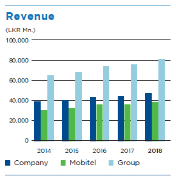
Operating expenses
The operating cost excluding depreciation of the Group of LKR 54.5 Bn. in 2017 increased by 2.5% to LKR 55.9 Bn. in 2018. Rigorous controls and continuous monitoring of the operating expenses have largely contributed to manage costs efficiently. The operating costs of SLT excluding depreciation increased from LKR 33.2 Bn. in 2017 to LKR 33.9 Bn. in 2018 which was an increase of 2.3%.
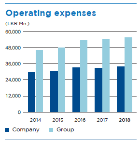
Profits
The growth in revenue coupled with proper cost management had given rise to healthy YoY growth in Group’s profit before tax (PBT) of 29.7%, despite the depreciation of LKR against the US Dollar. The profit after tax (PAT) of the Group grew by 25.6% YoY. The Group PBT grew from LKR 5.5 Bn. in 2017 to LKR 7.2 Bn. in 2018, while the PAT grew from LKR 3.9 Bn. to LKR 4.9 Bn. during the same period.
The operational efficiency of the company was accomplished primarily through efficient cost management and revenue growth in the year under review, resulting in YoY PBT growth of 47.6%, while PAT grew by 33.5% YoY. The company PBT grew from LKR 2.1 Bn. in 2017 to LKR 3.1 Bn. in 2018, while the PAT grew from LKR 1.4 Bn. to LKR 1.9 Bn. during the same period.
Mobitel recorded a PAT of LKR 3.6 Bn. in 2018, compared to LKR 3.3 Bn. recorded in the preceding year.
These growths were experienced notwithstanding challenges in the business environment such as currency depreciation of 19% on average over 2018 and rising interest rates in that year.
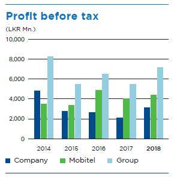
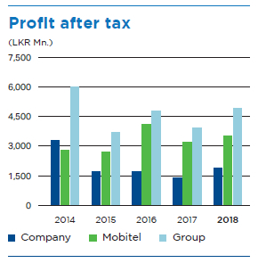
EBITDA
The improvement in Group EBITDA was recorded as 20.5% with a movement from LKR 21.2 Bn. in 2017 to LKR 25.6 Bn. in 2018. The company EBITDA increased by 18.3% to LKR 13.5 Bn. in 2018 from LKR 11.4 Bn. in 2017. The decent growth in revenue and the cost saving initiatives adopted across the Group during the financial year, have benefited the Group as a whole to improve EBITDA.
Following the same trend EBITDA Margin in 2018 was reported as 31.38% and 28.4% at Group and company levels respectively. In 2017 the same numbers were recorded as 28.0% and 25.5% at Group and company levels respectively.
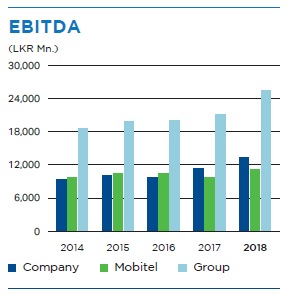
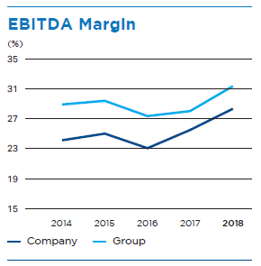
Return on equity (ROE)
The Group ROE increased to 6.7% in 2018 from 5.5% in 2017 while SLT as a Company, achieved an increase to 3.3% in 2018 from 2.4% in 2017. The progress in 2018 can be attributed to improved profitability in that year. This ratio measures the profit attributable to the shareholders as a percentage of their equity in the company.
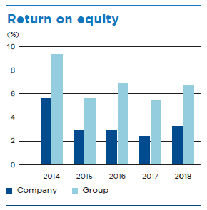
Gearing
In 2018 the Gearing Ratio for the Group was 0.43 compared to 0.37 in 2017 while the Company recorded a ratio of 0.44 in 2018 in comparison to 0.4 in 2017. The gearing ratio measures the proportion of a company’s borrowed funds to the sum of borrowings and equity. Substantial investments in capital expenditure in the financial year of 2018 had caused this escalation in gearing.
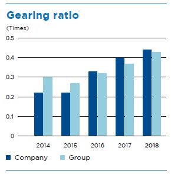
Since majority of the borrowings are used to fund capital expenditure, the related interest costs have been capitalised. However, Interest Cover ratio of the Group and company during 2018 were reported at 1.77 times and 0.78 times respectively.
Assets
Non-current assets
The increase in total non-current assets of the Group as at 31 December 2018 was 5.4% with the same increasing from LKR 128.2 Bn. as at 31 December 2017 to LKR 135.1 Bn. as at 31 December 2018. For SLT as a company, the total non-current assets were recorded at LKR 114.6 Bn., from LKR 109.9 Bn. recorded in 2017; which represents an increase of 4.3%.
Moreover, property, plant and equipment of the Group increased to LKR 123.9 Bn. in 2018, from LKR 117.0 Bn. in 2017, with heavy investments in ducts, cables and other outside plants which includes network rollout expenses. The company accounted for LKR 96 Bn. in 2018, compared to LKR 91.5 Bn. recorded in 2017.
The graphs shown below depict the trends in the ratios of Asset Turnover and the Net Assets Per Share, where the value of Total Assets is considered in arriving at the ratio.
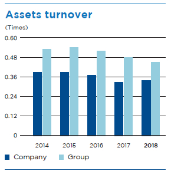
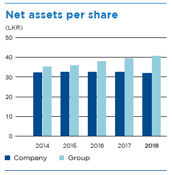
Segmental performance
The Group’s mainstream operations can be classified under fixed ICT operations and mobile ICT operations (overseen by Mobitel), with the contributing revenue percentages as 52% and 43% respectively. The balance 5% is generated from other segments.
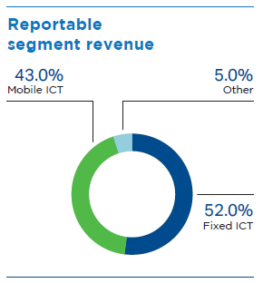
Heavy investments over the past few years in fixed ICT operations have resulted in the asset base amounting to 70% in that segment, while the assets in mobile ICT operations segment represented only 28%. The investments in fixed ICT operations are by nature, more capital intensive than the mobile ICT operations.
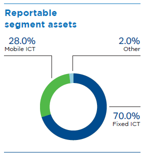
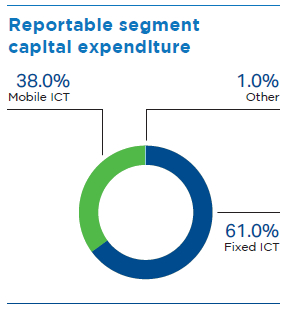
Additional information on segmental performance is available under Note 5 to the Financial Statements.
Value Added Statement
|
2018 LKR Mn. |
% |
2017 LKR Mn. |
% | |
| Value Added | ||||
| Revenue | 81,445 | 75,741 | ||
| Other Income | 1,604 | 2,247 | ||
| 83,049 | 77,988 | |||
| Goods and Services purchased from other sources | (34,065) | (33,152) | ||
| Value creation | 48,984 | 44,836 | ||
| Distribution of Value Added | ||||
| To Employees – Salaries, wages and other benefits | 17,750 | 36.24 | 17,117 | 38.18 |
| To providers of capital – Dividend to share holders | 1,606 | 3.28 | 1,606 | 3.58 |
| To Government – Taxes and Regulatory fees | 6,290 | 12.84 | 5,855 | 13.06 |
| To Lenders – Interest & Related charges | 2,048 | 4.18 | 637 | 1.42 |
| To Business Expansion and Growth – Depreciation | 17,948 | 36.64 | 17,287 | 38.56 |
| – Retained Income | 3,342 | 6.82 | 2,334 | 5.21 |
| 48,984 | 100 | 44,836 | 100 |
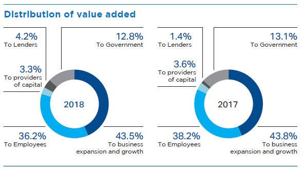
Subsidiaries Review
SLT VisionCom (Private) Limited
VisionCom is the country’s pioneering Internet Protocol Television services provider with over 400,000 subscribers. A fully owned subsidiary of the SLT group, VisionCom celebrated 10 years in the business, providing SLT PEO TV services to subscribers. Market differentiators include the introduction of the following for the first time in Sri Lanka:
- Rewind TV
- Picture-in-Picture
- Video on Demand
- Music on Demand
- Education on Demand
- Subscription Video on Demand
To strengthen its leading position, the Company will focus on better serving the local residential market, the leisure and educational sectors, and commercial industries.
Business growth
PEO TV recorded robust growth in subscriber base (18% YoY) and revenue (17% YoY). Revenue contribution to SLT PLC from all PEO TV products, increased from 8% to 9% over the previous year.
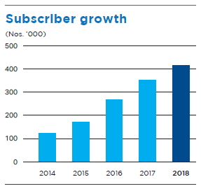
Performance review
Channels and content
- To plug gaps in more in demand content genres the Company added new channel categories and multilingual channels especially for hotels/leisure markets
- Charana, the first SLT-owned variety television channel was launched in September, reaching the entire PEO TV subscriber base in a very short period. The channel will soon provide an enhanced programme line-up with novel content
- SLT fibre customers’ HD channel bouquet was enhanced with the addition of more sports channels
- In support of young learners, the latest introduction, EOD (Education on Demand), facilitates hassle free learning from the comfort of home, bringing tuition to the doorstep
- Bollywood by Shemaroo, The first ever Bollywood SVOD (subscription video on demand) movie pack was launched to attract fans of the genre and to increase the average revenue per unit generated
- A new product was introduced for larger institutions, such as hotels, hospitals and educational institutes, who are now able to share their video content on a closed channel through video on demand (VOD) service with their branches, members or students
- Newly launched “Videsa”, is a series of educational channels dedicated to students in grade 6 to 11. Endorsed by the Ministry of Education, Dharmawahini provides content that is on par with the school curriculum for Videsa channels
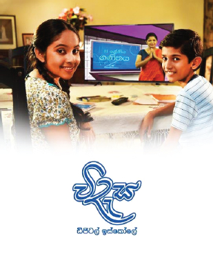
Enterprise solutions
PEO TV Corporate Segment increased to nearly 12,000 TV points island wide covering a widening network of hotels, hospitals, sports centres and other enterprise customers. Total revenue increased significantly through the extension of customised IPTV solutions attracting over 75 new accounts in 2018.
New Business
The new business of media buying and the creative productions agency were consolidated to cater to SLT PLC and subsidiaries, contributing to an increase in non-traditional revenue, while the expansion of Sales and PEO TV installations units helped secure service fulfilment and gearing of PEO TV’s revenue targets.
Advertising Sales
Impressive revenue growth was reached by securing over ten (10) corporate client accounts and reaching more than fifteen (15) prestigious media agencies. Novel initiatives implemented for advertising of cricketing events resulted in higher revenue generation.
Customer Engagement
PEO TV Kick, an all island promotion aligned with the FIFA World Cup 2018 attracted football fans across the island with a special truck promotion including attractive interactive features and games.
SLT Human Capital Solutions (HCS)
HCS provides the whole gamut of Human Resources (HR) solutions from resourcing and shared services to HR support services for both local and foreign markets. The Company acts as a head hunter for the SLT Group and other companies in both private and public sectors, celebrating its 10th anniversary in 2018. Through the web-based eMpower system, the Company provides HR IT solutions such as the automation of all HR-related processes from recruitment to retirement. With a strong focus on employee welfare and talent building, HCS offers “more for more,” catering to clients who require competent employees.
Performance Review
- Recorded revenue of over LKR 2.2 Bn.
- Honoured nearly 300 employees for 10 years of service to the organisation, and provided a further 530 employees with permanent employment
- Secured a number of local and global awards including:
- Asia’s Best Employer Brand Award – Award for “Best Overall Recruiting and Staffing Organisation of the year”
- Asia’s Training and Development Excellence Award
- Asia Pacific HRM Award – Award for “Excellence and Quality in BPO Industry”
- Sri Lanka’s HR Leadership Award – Award for the “Best Service Provider in HR”
- HR Tech Conference Award – Award for “Employer of Choice”
- Sri Lanka’s Best Employer Brand Award – Award for “CEO of the year”
- Asia’s Best Employer Brand Award – Award for “CEO of the Year”
- Received ISO 9001:2015 Quality Management Systems certification – the first Sri Lankan HR outsourcing organisation to successfully transition from its predecessor, ISO 9001:2008, to the new quality management systems
- Established Talentfort (Pvt) Ltd, a fully owned subsidiary of SLT Human Capital Solutions providing all new business operations for external client markets
- Successfully entered into HR outsourcing, head hunting and contact centre outsourcing service agreements with two renowned state sector banks in Sri Lanka and several prominent companies in the retail, FMCG and construction sectors
- Established the Franchise Teleshop Business unit and commenced its operations in Buttala, Ganemulla and Akuressa
- Continuously invested in training and developing for employees, providing opportunity and full funding for NVQ Level 04 qualifications in the technical field while offering new tailor made motivational training programmes for Customer Care and Sales employees
Future Aspirations
With a 3,000-strong employee cadre, HCS plans to diversify while improving synergy through training, cross learning and information exchange with foreign telecommunications companies. The Company aims to become the top total HR solutions provider in the country by 2021.
Sri Lanka Telecom (Services) Limited
Sri Lanka Telecom (Services) provides ICT-based infrastructure solutions and acts as a system integrator to corporate customers and small businesses. With the realignment of the Company’s competitive strategies, the Company is focusing on strengthening its business areas, such as providing enterprise solutions, CCTV/Surveillance systems, PABX, Networking and Data Storage Solutions, Managed Services, Servers and the expansion of Regional Operations island-wide.
Besides the System Integration (SI) business of the company, Sri Lanka Telecom Services Ltd. is engaged in telecommunication projects, contributing to the SLT Group success. They are mainly undertaking PSTN and Fibre new connections, PEO TV and OSP development projects etc. Further to that, the company has under taken PSTN and Broadband faults-clearing operation, and Quality and Quantity verifications of other SLT registered OSP unit rate contractors; saving a significant amount of funds for the Group under the Group synergy initiative.
2018 Highlights
- Business revenue grew 54% year-over-year in 2018. High operation costs were reduced as the business unit adopted a project outsourcing model.
- A new head office with state-of-the-art facilities was established at 148/15 Lesly Ranagala Mawatha, Colombo 08.
- The business unit established strategic partnerships with leading global manufacturers including Grandstream Networks, CP Plus, and Ericsson-LG for designing cost-effective solutions for customers.
- SLTS was selected as the Best OSP contractor in the Central Province.
- The company’s OSP operations expanded, covering 70% of the country’s geographical area which was about 45% in 2017.
- Revenue growth achieved from the OSP division has been 118%, which is a great contributor to the Company’s Profit and Loss Account.
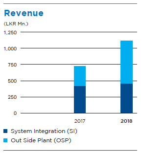
SLT Digital Info Services (Private) Limited
A wholly owned subsidiary of Sri Lanka Telecom PLC, SLT Digital Info Services (SLTDS) is a pioneering Directory Services and Digital Marketing Solutions Provider. The Company’s remit includes:
- Publication of SLT Rainbow Pages business directory in print and digital formats
- Provision of digital marketing solutions for small and mid sized businesses
- Managing events and activations
A 2016 survey by the Department of Census and Statistics showed that while Sri Lanka’s computer literacy (computer ownership) rate is at approximately 22-24%, its digital literacy rate (ability to use a digital device unaided) is at 33.8%. With digital usage in the country set to rise rapidly, the Company’s plans for expansion are timely. In 2018, SLTDS officially changed its name from SLT Publications (Private) Limited to SLT Digital Info Services (Pvt) Limited as a first step in its journey towards digital transformation.
Performance review
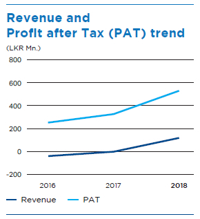
- Published and distributed SLT Rainbow Pages Western Province edition, the flagship directory
- Launched successful sales campaign for the 2019 SLT Rainbow Pages Western Province
- Established digital marketing arm offering products and services including social media advertising, search engine advertising, SMS campaigns, WhatsApp campaigns, email campaigns, SEO consultation and website creation
- Successfully organised a range of events for SLT PLC
Future Aspirations
Despite challenges, the directory business is expected to contribute the highest portion of revenue in 2019 as well.
SLTDS will be strengthening its digital revenue generation in 2019 by adding several digital platforms to its product range. Within urban areas only, about 20% of businesses can be identified as potential customers for the Company’s digital services portfolio. In rural areas, however, the potential is very high. Additional benefits include the ability to acquire new customers for the parent company (SLT) and other subsidiaries (Mobitel and PEO TV).
Strengthening its events and activations business arm, SLTDS plans to capture more opportunities from other organisations apart from the SLT Group.
2019 is set to be a year of growth for SLTDS and the Company has already embarked on its journey towards digitalisation.
SLT Campus (Private) Limited
A fully owned subsidiary of SLT PLC, with an academic staff of over 80, SLT Campus (SLTC) is Sri Lanka’s first corporate powered, undergraduate and postgraduate education provider. Established with the goal of realising the country’s vision of becoming the knowledge hub of Asia, SLTC offers over 25 academic programmes at three schools of study:
- School of Engineering
- School of Technology
- School of Professional Studies
In addition, the research arm of SLTC, the Office of Research and Innovative Services (ORIS), continues to conduct postgraduate research programmes in collaboration with local researchers of high calibre and international repute. Over the past two and half years, the programme has produced four scientific publications in internationally renowned scientific journals and eight publications at IEEE conferences (including two in the USA).
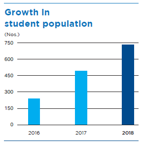
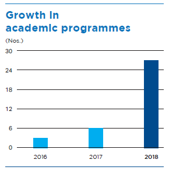
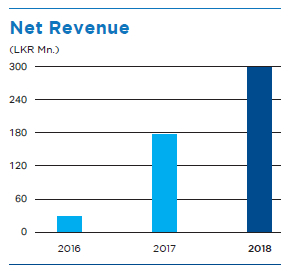
Performance Review
- Secured net revenue of LKR 300 Mn.
- Increased student population to over 700, with the fourth batch enrolled in March 2018
- Launched SLTC Business School in December 2018 with subjects currently on offer including:– Marketing – Finance – Operations – Human Resource Management – Supply Chain Management – Tourism and Hospitality Management
- Transitioned to a fully residential campus with the construction of a state-of-the-art hostel facility for 400 students
- Completed the construction of the multi games court, amphitheatre, and a fully equipped fitness centre to promote a work-life-learn balance to students and staff
eChannelling
eChannelling PLC is the pioneer software development and ICT service provider to the Sri Lankan healthcare industry, the first company in Sri Lanka to offer a complete e-commerce-based service in the health sector, and the first public quoted technology company in the Colombo Stock Exchange. It is the largest channelling network with 200+ recognised hospitals, 5,500+ doctors, and 2,000+ outlets accessible from any telecommunications network, bridging the gap between healthcare providers and the public through an effective, efficient, and user-friendly platform.
2018 Highlights
- eChannelling introduced self-help kiosk machines at Lanka Hospitals, which can be operated by walk-in patients and customers to make appointments without the hassle of waiting in long queues at channelling counters.
- eChannelling together with Mobitel and the Information and Communication Technology Agency of Sri Lanka (ICTA) embarked on a national endeavour, “eChannelling for Government Hospitals”, to be a service provider for outpatient department (OPD) time reservation at government hospitals.
- eChannelling owned the Online Brand of the Year – Silver accolade at the SLIM Brand Excellence Awards 2018.
- eChannelling was recognised as the “Best digital healthcare platform” at the South Asia mBillionth Awards 2018 for excellence in mobile innovations for development.
- To increase convenience for patients, we introduced the running number system which shows the current patient number in consultation with the doctor thereby enabling to reduce waiting time of patients when consulting doctors.
- Revenue – LKR 132,805,602
- NPAT – LKR 33,720,150
- ROI – 13.80%
- Total Assets – LKR 317,872,136
- Revenue through the “SLT–1225” hotline grew by 70.43%